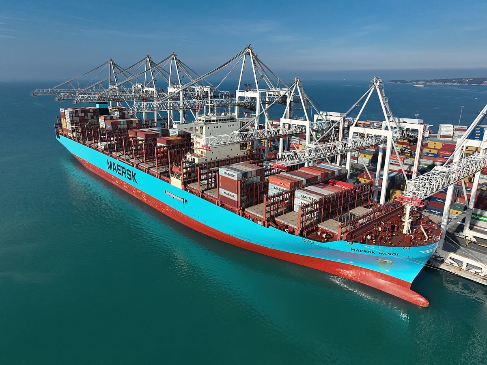

Internacional · 26 de outubro
Portos europeus testam janela única para cruzeiros
Projeto-piloto em cinco cidades promete reduzir filas e emissões; agências temem impacto no turismo local.

Cinco portos do Mediterrâneo e do Atlântico começaram a testar um sistema de janela única para navios de cruzeiro. A ideia é concentrar reservas de atracação, controle migratório e serviços de abastecimento em uma plataforma digital, reduzindo filas e o tempo em que as embarcações ficam paradas.
O projeto-piloto envolve os portos de Barcelona, Marselha, Gênova, Lisboa e Amsterdã e deve durar 12 meses. Cada navio terá um horário fixo de chegada e saída, com tolerância de 30 minutos. Em troca, os terminais oferecem prioridade no uso de energia elétrica em terra, o que evita a queima de combustível durante a permanência.
Menos espera, menos emissão
Dados preliminares do consórcio indicam redução de 18% no tempo de espera e de 12% nas emissões de dióxido de carbono no primeiro mês. O sistema também promete diminuir o vai e vem de turistas no centro histórico. “O passageiro sabe a que horas desembarca e encontra transporte organizado”, disse o diretor do consórcio, Matteo Rinaldi.
Agências de viagem, porém, temem que a rigidez dos horários prejudique roteiros. Pequenos portos também receiam perder escala para os grandes terminais. “A janela única não pode virar uma concentração ainda maior de navios nos mesmos lugares”, alertou a representante do setor, Claire Dubois.
Efeito nas cidades
Em Lisboa, moradores acompanham o teste com cautela. O porto recebe até quatro navios por dia no verão, e o centro histórico sofre com o trânsito de ônibus turísticos. A prefeitura quer usar os dados do piloto para limitar a circulação em duas ruas. Em Barcelona, a aposta é ampliar o uso de energia em terra e reduzir o ruído.
O consórcio vai publicar um relatório trimestral com atrasos, consumo e reclamações. Se os resultados se mantiverem, o sistema pode ser adotado por outros 11 portos em 2027. A Comissão Europeia acompanha o projeto, mas ainda não confirmou financiamento para a segunda fase.
Para o pesquisador de logística André Salles, o teste é útil, mas insuficiente. “Janela única resolve a fila do navio, não a do turismo. É preciso integrar metrô, trem e bicicleta”, disse.